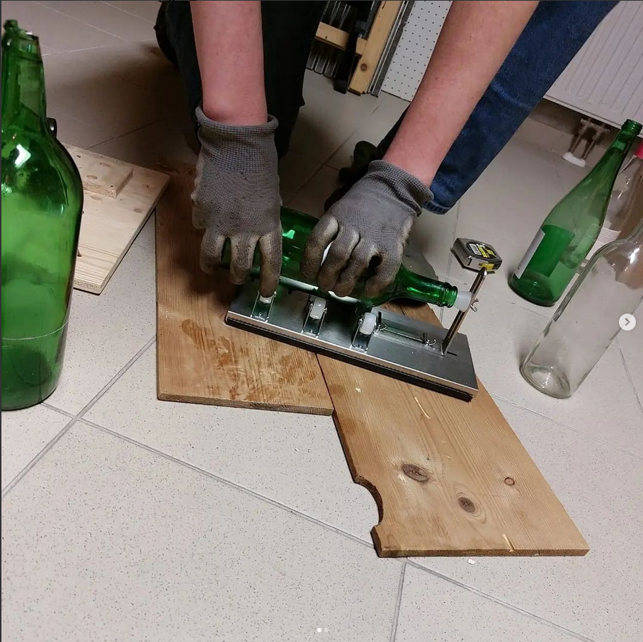

Was ist Winecut? Jährlich werden in Österreich rund 270.000 Tonnen Altglas gesammelt. Teilweise werden die alten Weinflaschen auch gewaschen, gereinigt und wiederverwendet. Für die meisten Weinbauern ist es jedoch wirtschaftlicher, jedes Jahr neue Flaschen zum Abfüllen zu benutzen, da die Reinigung alter Flachen sehr gründlich sein muss und daher recht kostspielig ist. Alte und gebrauchte Weinflaschen werden dann oftmals einfach in Lagerhallen gesammelt, liegen gelassen und vergessen.
Unsere Produkte werden Lokal, nachhaltig handgefertigt. Der Produktionsstandort ist unsere HTL Mödling, da diese über die notwendigen Maschinen verfügt, Materialien auf Lager hat und zentral gelegen ist. Die Vertriebswege sind kurz welches uns ein effizientes und nachhaltiges arbeiten ermöglicht.
Die Produkte sind zu 90% Nachhaltig, einerseits werden die Glasflaschen upgecycled, also bereits vorhandenes Material wird wiederverwendbar, unser Holz wird aus Restmaterialien gefertigt da diese ansonsten entsorgt werden. Weiters werden die Kerzen aus Bienenwachs gefertigt und Handgegossen, somit befinden sich in unseren Kerzen kein Parapherien.
Die JuniorCompany Winecut ist in ihrem Kern das Produkt aus 8 Schülern der HTL-Mödling, sie wurde Mitte Oktober 2021 gegründet und bringt unsere Interessen zu Gestalten & zu Desingen, genauso wie das Verlangen Nachhaltig zu sein zusammen.
"Junior Company?!", Du magst dich fragen was ist das? Die Junior Company ist für uns Schlüer eine tolle Gelegenheit Praxiserfahrung zu erlangen & zu sehen wie ein Unternehmen von Innen aussieht und wie es vielleicht nicht aussehen sollte. In einem Schuljahr bauen wir ein Unternehmen & Geschäftsmodel von Grund auf und sind im Team für alle Bereiche die ein Unternehmen hat zuständig.
Wir sind stets von unserem Projekt begeistert und stehen mit stolz und mehr als 100% hinter dem was Winecut produziert.